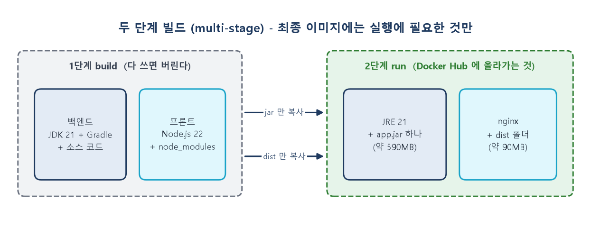

2장. Docker 이미지 만들기
학습 목표
- Dockerfile, 이미지, 컨테이너, 레지스트리(Docker Hub)의 관계를 설명한다.
- 두 단계 빌드(multi-stage) 로 작은 이미지를 만드는 까닭을 안다.
- 내 PC 에서
docker compose up -d --build로 운영과 똑같이 5개 컨테이너를 켜고 확인한다.
2-1. 이미지와 컨테이너
MSA 기초 과정에서도 Docker 를 썼다. PostgreSQL 을 postgres:18 이미지로 받아 컨테이너로 켰다. 이번에는 우리 서비스 4개도 이미지로 만든다.

| 낱말 | 뜻 | 비유 |
|---|---|---|
| Dockerfile | 이미지를 만드는 순서를 적은 글자 파일 | 요리법 |
| 이미지 | 프로그램 + 실행에 필요한 것(Java, 설정)을 담은 꾸러미. 바뀌지 않는다 | 밀키트 |
| 컨테이너 | 이미지를 켜서 실제로 돌고 있는 프로그램 | 조리한 음식 |
| Docker Hub | 이미지를 올려 두고 어디서나 받는 창고 | 밀키트 창고 |
[배포 개념] "내 PC 에서는 되는데요?" 를 없앤다. 서버에 Java 를 깔고, 버전을 맞추고, jar 를 복사하는 일을 사람이 하면 꼭 무언가 다르다. 이미지에는 Java 21 과 jar 가 함께 들어 있으니 어느 컴퓨터에서 켜도 똑같이 돈다. 서버에는 Docker 하나만 있으면 된다.
2-2. 백엔드 Dockerfile - 파일 하나로 서비스 3개
서비스 3개(api-gateway, user-service, post-service)는 모두 Spring Boot 이고 같은 Gradle 프로젝트(backend/) 안에 있다. 그래서 Dockerfile 도 하나만 만들고, 어느 서비스를 구울지는 빌드할 때 SERVICE 값으로 고른다.

# Dockerfile (backend) - Spring Boot 서비스 하나를 이미지로 굽는다
#
# 서비스 3개(api-gateway, user-service, post-service)가 이 파일 하나를 함께 쓴다.
# 어느 서비스를 구울지는 빌드할 때 SERVICE 값으로 정한다.
#
# docker build --build-arg SERVICE=user-service -t rlaeocjf/msa-user-service backend
#
# 두 단계(multi-stage)로 만든다.
# 1단계 build : JDK(컴파일러 포함)로 Gradle 빌드 → jar 파일 하나
# 2단계 run : JRE(실행만 하는 가벼운 Java)에 jar 만 복사
# → 최종 이미지에는 소스 코드도 Gradle 도 없다. 크기가 작아진다.
# ---------- 1단계: 빌드 ----------
FROM eclipse-temurin:21-jdk AS build
WORKDIR /app
# (1) Gradle 설정 파일만 먼저 복사하고 라이브러리를 받아 둔다.
# 소스만 고치고 build.gradle 은 그대로면, Docker 가 이 단계의 결과(캐시)를 다시 써서
# 라이브러리를 또 받지 않는다. → 두 번째 빌드부터 훨씬 빠르다.
COPY gradlew settings.gradle build.gradle ./
COPY gradle gradle
COPY api-gateway/build.gradle api-gateway/
COPY user-service/build.gradle user-service/
COPY post-service/build.gradle post-service/
RUN chmod +x gradlew \
&& ./gradlew --no-daemon -q :api-gateway:dependencies :user-service:dependencies :post-service:dependencies > /dev/null
# (2) 소스를 복사하고, 고른 서비스 하나만 jar 로 만든다.
COPY . .
ARG SERVICE
RUN ./gradlew --no-daemon -q :${SERVICE}:bootJar -x test
# ---------- 2단계: 실행 ----------
FROM eclipse-temurin:21-jre
ARG SERVICE
WORKDIR /app
COPY --from=build /app/${SERVICE}/build/libs/${SERVICE}-0.0.1-SNAPSHOT.jar app.jar
# 메모리를 적게 쓰도록 Java 를 설정한다 (무료 EC2 는 메모리가 1GB 뿐이라 서비스 3개가 나눠 써야 한다)
# -Xmx128m : 객체를 담는 힙 메모리를 최대 128MB 로
# -XX:+UseSerialGC : 메모리를 적게 쓰는 가장 단순한 쓰레기 수거(GC) 방식
# -Xss512k : 스레드 하나가 쓰는 스택 크기를 줄인다
# -XX:TieredStopAtLevel=1 : 가장 가벼운 JIT 컴파일만 쓴다 (최고 속도 대신 메모리를 아낀다)
# -XX:ReservedCodeCacheSize=32m, -XX:MaxMetaspaceSize=128m : 컴파일된 코드·클래스 정보 공간의 한도
# (교안을 만들 때 내 PC 에서 잰 값: 서비스 하나 약 160~230MB. 이 설정이 없으면 약 220~300MB)
ENV JAVA_TOOL_OPTIONS="-Xmx128m -XX:+UseSerialGC -Xss512k -XX:TieredStopAtLevel=1 -XX:ReservedCodeCacheSize=32m -XX:MaxMetaspaceSize=128m"
ENTRYPOINT ["java", "-jar", "app.jar"]
읽는 요령은 세 가지다.
FROM ... AS build와 두 번째FROM: 첫 단계에서 JDK 로 jar 를 만들고, 두 번째 단계는 JRE 위에 jar 하나만 가져온다(COPY --from=build). JDK, Gradle, 소스, 내려받은 라이브러리 캐시는 최종 이미지에 들어가지 않는다.- 설정 파일을 먼저 COPY: Docker 는 줄(단계)마다 결과를 저장해 둔다(캐시).
build.gradle이 그대로면 "라이브러리 받기" 단계를 건너뛴다. 소스만 고친 두 번째 빌드가 몇 분에서 몇십 초로 줄어든다. JAVA_TOOL_OPTIONS: Java 는 메모리를 넉넉히 잡는 버릇이 있다. 1GB 서버에 서비스 3개 + DB 를 올리려면 한도를 정해 줘야 한다.
.dockerignore 는 .gitignore 의 Docker 판이다. 내 PC 의 build/, .gradle/ 폴더가 이미지 빌드에 섞여 들어가지 않게 막는다.
# Docker 빌드에 보내지 않을 것 (빌드가 빨라지고, 내 PC 의 빌드 결과가 섞이지 않는다)
.gradle
build
*/build
.idea
2-3. 프론트엔드 Dockerfile - 빌드는 Node, 실행은 nginx
React 는 npm run build 하면 HTML·JS·CSS 파일(dist/)이 나온다. 이 파일들은 Node.js 없이 웹 서버만 있으면 내려줄 수 있다. 그래서 2단계에서는 Node.js 를 버리고 가벼운 nginx 에 dist/ 와 1장의 nginx.conf 만 넣는다.
# Dockerfile (frontend) - React 를 빌드해서 nginx 로 내려주는 이미지
#
# 두 단계(multi-stage)로 만든다.
# 1단계 build : Node.js 로 npm run build → dist 폴더 (HTML·JS·CSS 파일)
# 2단계 run : 가벼운 nginx 이미지에 dist 와 nginx.conf 만 복사
# → 최종 이미지에는 Node.js 도 node_modules 도 없다. 크기가 작고(약 50MB) 빠르다.
# ---------- 1단계: 빌드 ----------
FROM node:22-alpine AS build
WORKDIR /app
# package.json 을 먼저 복사해 npm ci 를 한다.
# 소스만 고치고 패키지는 그대로면, 이 단계는 Docker 가 저장해 둔 결과(캐시)를 다시 써서 빨라진다.
COPY package.json package-lock.json ./
RUN npm ci
COPY . .
RUN npm run build
# ---------- 2단계: 실행 ----------
FROM nginx:1.29-alpine
COPY nginx.conf /etc/nginx/conf.d/default.conf
COPY --from=build /app/dist /usr/share/nginx/html
EXPOSE 80
npm ci는npm install과 비슷하지만package-lock.json에 적힌 정확한 버전만 설치한다. 빌드할 때마다 같은 결과가 나오므로 Docker·CI 에서는npm ci를 쓴다.
2-4. docker-compose.yml - 5개를 한 번에
이미지 4개 + DB 를 하나하나 docker run 으로 켜려면 명령이 길다. docker compose 는 여러 컨테이너의 설정을 파일 하나에 적어 두고 한 줄로 켠다.
# =====================================================================
# docker-compose.yml - 내 PC 에서 "운영과 똑같이" 실행해 보기
#
# docker compose up -d --build 이미지 4개를 만들고(빌드) DB 까지 5개를 켠다 → http://localhost
# docker compose ps 상태 확인
# docker compose logs -f post-service 한 서비스의 로그 보기 (Ctrl+C 로 빠져나옴)
# docker compose down 모두 끄기 (데이터는 남는다. -v 를 붙이면 데이터도 지운다)
#
# 이미지 이름의 앞부분은 .env 의 DOCKERHUB_USERNAME 이다 (.env.example 참고. 없으면 local/msa-...)
#
# 서버(EC2)에서는 이 파일 대신 deploy/docker-compose.prod.yml 을 쓴다.
# 이 파일 : 소스로 이미지를 "빌드" 해서 실행
# prod : Docker Hub 에 올라간 이미지를 "받아서" 실행 (서버에는 소스 코드가 없다)
#
# [배포 개념] 바깥에 열린 포트는 frontend(nginx)의 80 하나뿐이다.
# api-gateway, user-service, post-service, db 는 ports 가 없다 → 같은 도커 네트워크 안에서만 보인다.
# 서비스끼리는 "서비스 이름" 으로 찾는다. (예: api-gateway 가 http://user-service:8081 로 보낸다)
# =====================================================================
name: msa-deploy
services:
# ---------- 데이터베이스: 컨테이너 1개, DB 2개 (userdb, postdb) ----------
db:
image: postgres:18
restart: unless-stopped
environment:
POSTGRES_USER: postgres
POSTGRES_PASSWORD: ${DB_PASSWORD:-postgres} # .env 파일에 DB_PASSWORD 가 있으면 그 값, 없으면 postgres
TZ: Asia/Seoul
command: ["postgres", "-c", "timezone=Asia/Seoul"]
volumes:
- db_data:/var/lib/postgresql
- ./db:/docker-entrypoint-initdb.d # 처음 켤 때 userdb, postdb 를 만든다
healthcheck:
test: ["CMD-SHELL", "pg_isready -U postgres -d postdb"]
interval: 5s
timeout: 3s
retries: 20
# ---------- 회원 서비스 ----------
user-service:
build:
context: ./backend
args:
SERVICE: user-service # backend/Dockerfile 하나로 서비스마다 다른 이미지를 굽는다
image: ${DOCKERHUB_USERNAME:-local}/msa-user-service:latest # 이미지 이름. .env 의 DOCKERHUB_USERNAME (없으면 local)
restart: unless-stopped
environment:
TZ: Asia/Seoul # 시간대를 한국으로 (없으면 UTC 라 글 작성 시각이 9시간 늦게 보인다)
DB_URL: jdbc:postgresql://db:5432/userdb # localhost 가 아니라 서비스 이름 db
DB_PASSWORD: ${DB_PASSWORD:-postgres}
JWT_SECRET: ${JWT_SECRET:-dev-only-secret-change-me-0123456789abcdef}
depends_on:
db:
condition: service_healthy # DB 가 준비된 뒤에 켠다
# ---------- 게시글 서비스 ----------
post-service:
build:
context: ./backend
args:
SERVICE: post-service
image: ${DOCKERHUB_USERNAME:-local}/msa-post-service:latest
restart: unless-stopped
environment:
TZ: Asia/Seoul # 시간대를 한국으로 (없으면 UTC 라 글 작성 시각이 9시간 늦게 보인다)
DB_URL: jdbc:postgresql://db:5432/postdb
DB_PASSWORD: ${DB_PASSWORD:-postgres}
depends_on:
db:
condition: service_healthy
# ---------- 게이트웨이 (정문) ----------
api-gateway:
build:
context: ./backend
args:
SERVICE: api-gateway
image: ${DOCKERHUB_USERNAME:-local}/msa-api-gateway:latest
restart: unless-stopped
environment:
TZ: Asia/Seoul # 시간대를 한국으로 (없으면 UTC 라 글 작성 시각이 9시간 늦게 보인다)
USER_SERVICE_URL: http://user-service:8081
POST_SERVICE_URL: http://post-service:8082
JWT_SECRET: ${JWT_SECRET:-dev-only-secret-change-me-0123456789abcdef} # user-service 와 반드시 같은 값
depends_on:
- user-service
- post-service
# ---------- 화면 (React + nginx) - 바깥에 열린 유일한 문 ----------
frontend:
build: ./frontend
image: ${DOCKERHUB_USERNAME:-local}/msa-frontend:latest
restart: unless-stopped
ports:
- "80:80" # 내 PC(서버) 80 → nginx 80. 주소: http://localhost
depends_on:
- api-gateway
volumes:
db_data:
눈여겨볼 곳은 다음과 같다.
| 설정 | 뜻 |
|---|---|
build: context: ./backend, args: SERVICE: user-service |
backend/Dockerfile 로 user-service 이미지를 굽는다 |
image: ${DOCKERHUB_USERNAME:-local}/msa-user-service:latest |
구운 이미지의 이름. 3장에서 이 이름 그대로 Docker Hub 에 올린다 |
DB_URL: jdbc:postgresql://db:5432/userdb |
localhost:5435 가 아니라 서비스 이름 db 와 컨테이너 안쪽 포트 5432 |
depends_on: db: condition: service_healthy |
DB 가 준비(healthcheck 통과)된 뒤에 서비스를 켠다 |
restart: unless-stopped |
컨테이너가 죽거나 서버가 재부팅되면 다시 켠다 |
TZ: Asia/Seoul |
컨테이너 시간대를 한국으로 (7장에서 왜 필요한지 본다) |
ports: "80:80" |
frontend 에만 있다. 나머지는 바깥에서 보이지 않는다 |
[배포 개념] 컨테이너끼리는 서비스 이름으로 찾는다. compose 는 5개 컨테이너를 같은 가상 네트워크에 넣고, 서비스 이름(
db,user-service,api-gateway)을 주소처럼 쓰게 해 준다. MSA 기초 과정의localhost:8081이 여기서는user-service:8081이 된다. 게이트웨이가 이 주소를 쓰도록USER_SERVICE_URL환경 변수로 넣어 준다.
2-5. 내 PC 에서 운영처럼 실행하기
MSA 기초 과정의 DB 컨테이너나 IntelliJ 서비스가 켜져 있다면 먼저 끈다. (포트는 겹치지 않지만 메모리를 아끼자) Docker Desktop 이 실행 중인지도 확인한다.
[PS] 저장소 폴더에서 - 처음에는 라이브러리를 받느라 몇 분 걸린다
docker compose up -d --build # 이미지 4개를 빌드하고(--build) DB 까지 5개를 뒤에서(-d) 켠다
docker compose ps # 5개의 상태 보기 (db 가 healthy 면 준비 끝)
NAME SERVICE STATUS PORTS
msa-deploy-api-gateway-1 api-gateway Up 30 seconds
msa-deploy-db-1 db Up 41 seconds (healthy) 5432/tcp
msa-deploy-frontend-1 frontend Up 30 seconds 0.0.0.0:80->80/tcp
msa-deploy-post-service-1 post-service Up 35 seconds
msa-deploy-user-service-1 user-service Up 35 seconds
PORTS 칸을 보자. 0.0.0.0:80->80 은 frontend 하나뿐이다. db 의 5432/tcp 는 "컨테이너 안에서 5432 를 쓴다" 는 뜻일 뿐 내 PC 에 열린 것이 아니다.
브라우저로 http://localhost (포트 번호 없음 = 80)를 연다. 회원가입 → 로그인 → 글쓰기를 해 본다. 화면은 MSA 기초 과정과 똑같지만, 이번에는 IntelliJ 도 npm run dev 도 없다.
[PS] 게이트웨이를 직접 부를 수 있을까? - 연결되지 않아야 정상이다
curl.exe -s -o NUL -w "%{http_code}`n" http://localhost/api/posts # 200 (nginx 를 거쳐서)
curl.exe -s -o NUL -w "%{http_code}`n" http://localhost:8080/api/posts # 000 (8080 은 바깥에 없다)
[PS] 메모리 사용량 보기 - EC2(1GB)에 올라갈 수 있을지 미리 확인
docker stats --no-stream --format "table {{.Name}}\t{{.MemUsage}}" # 컨테이너별 메모리를 한 번만 찍는다
NAME MEM USAGE / LIMIT
msa-deploy-frontend-1 6.777MiB / 15.59GiB
msa-deploy-api-gateway-1 149.7MiB / 15.59GiB
msa-deploy-post-service-1 223.4MiB / 15.59GiB
msa-deploy-user-service-1 204.2MiB / 15.59GiB
msa-deploy-db-1 79.35MiB / 15.59GiB
교안을 만들 때 강사 PC(메모리 16GB)에서 잰 값이다. 숫자는 PC 마다 조금 다르다. 다른 컨테이너(예: MSA 기초 과정의 mas-db)가 켜져 있으면 목록에 함께 나온다. 우리 것 5개를 합쳐서 600~700MB 쯤이면 1GB 서버에 올릴 수 있다. (5장에서 스왑 메모리를 더해 여유를 만든다)
[PS] 다 봤으면 끈다
docker compose down # 5개를 끄고 지운다 (DB 데이터 볼륨은 남는다)
docker compose down은 컨테이너만 지우고 DB 데이터(볼륨db_data)는 남긴다. 처음부터 다시 하고 싶으면docker compose down -v로 볼륨까지 지운다.
확인 문제
- 백엔드 이미지에 JDK 가 아니라 JRE 만 들어가는 까닭은?
- Dockerfile 에서
build.gradle을 소스보다 먼저 복사하면 무엇이 좋은가? - compose 안에서 user-service 가 DB 에 접속하는 주소가
localhost:5435가 아니라db:5432인 까닭은? http://localhost:8080에 연결되지 않는 것은 고장인가?